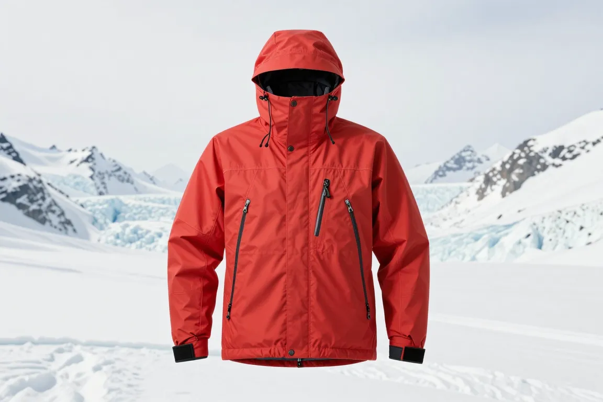

The alpine kit built around a waterproof, breathable membrane shell with taped seams, over a fleece mid layer. A synthetic base, made for speed and low weight.

Core thesis
A shell must stop rain and let sweat out. A membrane with pores that block water and pass vapour, seams that are sealed, and a cut that moves with the climber.
Design principles
Laminate a membrane with pores of about 0.2 micron between two nylon layers.
Tape every seam with a heat-sealed strip, so that water cannot pass the needle holes.
Weigh a full hard shell at 400 to 600 g, and a light shell at 250 g or less.
Cut the hood to fit over a helmet and move with the head.
Add a water-resistant zip with a storm flap on the front and a vent zip under the arm.
Cut the arm with an articulated elbow and a long back, so that the hem stays down when the arm is up.
Wear a base layer, a fleece and the shell, and no cotton.